AI落地奖
¥1,000
- 源于真实工作任务
- 可持续，已被复用
- 有价值改善数据，允许尚无法由官方系统证明

AI HACKATHON全员AI能力课程自主学习与练习
在本部门 AI先锋支持下，
筛选优先探索的真实业务场景。
部门确认场景，组队验证价值。
验证业务改善，积累可复用成果。
成果参加年度评审暨黑客松决赛，
按规则激励与认定。
AI先锋候选人集中学习与实践。
AI先锋候选人将营中所学带回部门，
赋能各部门参赛项目落地。
形成各部门AI参赛项目列表。
带着项目进展，继续打磨与加速。
各部门展示成果，参与评审。
项目经 AI先锋初步评估，再提报。
3人
2项
2—3人组队，明确每人分工。
原则上由业务部门自主组队，
鼓励跨部门合作。
AI部门仅作为外脑参与。
¥1,000
¥3,000
¥8,000
+∞
该奖项1年后启用
1、为鼓励各部门积极探索AI应用，项目评审条件作为项目认定的原则性指引，评审过程将结合AI项目实际业务场景、运行情况、价值证据及可持续的复用程度进行综合判断，具体的奖项认定标准请查阅《灏米创新AI激励管理办法V1.0》；
2、可参考的数据价值维度：
3、建议需要竞争参与年底AI激励的项目，统一通过首期的AI黑客松的提报路径，即可以通过预报名AI黑客松，也可以在首期AI先锋营后，通过各部门AI先锋候选人进行提报。
AI黑客松决赛，将对各部门提报的AI先锋候选人进行综合评审，最终认证为“AI先锋”的小伙伴，将默认达到L3认证标准。
获任意AI奖项的项目负责人，默认达到L2认证标准。
（不包括2026年年底的L2认证考核，适用于2027年及之后的L2认证）
申报单元一级部门 AI 业务场景任务项目
按照对应奖项要求，准备业务场景与项目运行情况。
1名项目负责人，其他成员原则上不超过2名，分工清晰。
准备运行记录、数据口径、价值证明及复用情况等验证数据。
12月—次年1月
6月—7月
12月—次年1月
朱碧骏综合品类事业部
段培培流程IT中心
郭雪侠TikTok运营中心
个人自荐：可向一级部门负责人，或AI行动季项目组的 Jesse、Chen、飞飞自荐。
部门推荐：一级部门可向AI行动季项目组推荐候选人。
每个一级部门至少1名。
当下可参考候选人与部门人数 1∶25至1∶20 的比例计算。例如，某部门有20人，可提报1人。
不按人数机械分配，可按业务条线增补。
不是。AI黑客松决赛将对AI先锋候选人进行统一认证成为正式AI先锋，同时默认通过L3认证。
仍需参加。年底的L2能力认证考核，是一次全员性质的考核。
懂业务 Know-How熟悉所在业务的流程、关键任务与痛点，能够带来真实业务问题。
AI学习热情对AI具备基本认知或实践经验，有主动探索的意愿，愿意持续学习并动手实践。
能推动项目愿意牵头或参与AI项目，连接业务人员与相关资源，推动方案建设、业务试用和效果验证。
综合素质具备良好的问题分析、沟通协作与执行能力，能够拆解复杂问题、主动应对困难，对结果负责，并根据反馈持续改进。
不限。
AI先锋：相当于各一级部门的AI牵头人，赋能并协助部门伙伴发起AI项目。
AI项目负责人：是发起具体项目的直接负责人。